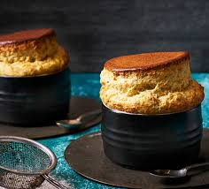

Home
Souffle

Description
A soufflé is a baked egg-based dish originating in France, known for its airy, puffy texture. It's made with a base of crème pâtissière, béchamel, or a purée, combined with whipped egg whites. As it bakes, the egg whites expand, creating a light and delicate dish that can be savory or sweet.
Ingredients
- 30g unsalted butter, plus extra for greasing
- 30g plain flour
- 250ml milk, warmed
- 3 large eggs, separated
- 75g grated Gruyère cheese (or a similar strong cheese like mature cheddar)
- 1/4 teaspoon Dijon mustard (optional, but recommended for savory soufflés)
- Pinch of cayenne pepper (optional)
- Salt and freshly ground black pepper to taste
Steps
- Prepare your soufflé dish: Preheat your oven to 200°C (180°C fan/Gas Mark 6). Grease a 1.5-liter soufflé dish generously with butter. You can also lightly dust it with a little flour or grated cheese after greasing for extra non-sticking.
- Make the béchamel base: In a medium saucepan, melt the 30g butter over medium heat. Add the flour and stir continuously for 1-2 minutes to form a smooth paste (a roux).
- Incorporate the milk: Gradually whisk in the warm milk, a little at a time, ensuring each addition is fully incorporated before adding more. Continue whisking until the sauce is smooth, thick, and coats the back of a spoon. Remove from the heat.
- Add flavorings and egg yolks: Stir in the grated cheese, Dijon mustard (if using), and cayenne pepper (if using) until the cheese is melted and fully combined. Season with salt and pepper to taste. Allow the mixture to cool slightly for a few minutes, then whisk in the egg yolks one at a time until well combined.
- Whip the egg whites: In a separate, clean, dry bowl, whisk the egg whites with an electric mixer (or a balloon whisk if you're feeling energetic) until stiff peaks form. They should be firm enough to hold their shape when the whisk is lifted.
- Fold in the egg whites: Gently fold about a third of the whipped egg whites into the cheese mixture to lighten it. Then, carefully fold in the remaining egg whites in two additions, taking care not to deflate them. Use a large metal spoon and a gentle cutting and folding motion to incorporate them fully.
- Fill and bake: Pour the soufflé mixture into the prepared soufflé dish. You can run your thumb around the rim of the dish to create a slight indentation, which helps the soufflé rise evenly.
- Bake: Place the soufflé dish in the preheated oven. Bake for 25-30 minutes, or until the soufflé is gloriously puffed up and golden brown on top. Avoid opening the oven door during the first 20 minutes of baking, as this can cause the soufflé to collapse.
- Serve immediately: Soufflés are best served straight from the oven, as they will start to deflate shortly after being removed. Enjoy your light and airy creation!